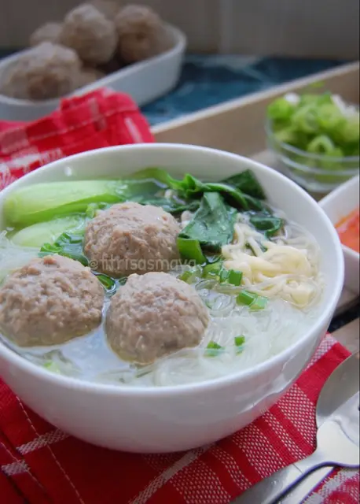

Bakso
Bakso merupakan makanan asli Indonesia yang terbuat dari dagaing sapi yang di haluskan kemudian dibentuk menjadi bola, dimasak dengan kuah yang menjadikan rasanya begitu lezat.

Ingredients
- 500 gram daging sapi
- 1 buah putih telur
- 9sdm tepung tapioka
- 2 sendok makan garam halus
- 1 sendok makan merica halus
Steps
- Siapkan semua bahan
- Hancurkan es batu dengan cara masukkan kedalam plastik lalu pukul2 sampai halus. (Ini jika tidak ada alat serut es ya, jika ada tentu saja lebih halus pakai alat serut.)
- Potong daging kecil2, lalu masukkan kedalam food processor proses sampai halus, masukkan es batu sedikit demi sedikit. Masukkan putih telur proses sampai halus
- Masukkan tepung tapioka, baking powder, bawang putih bubuk merica dan garam proses lagi sampai tercampur rata dan tekstur adonan seperti pasta